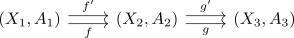

Category hTopPairs
Definition
The category hTopPairs is defined as quotient category of Category TopPairs for the Relation $f \sim g$ if and only if there exists a homotopy of maps of pairs of spaces
Proof
welldefinedness of the relation follows from the naturality of the restriction, as for

both $g \circ f \sim g' \sim f'$ and $g_{\vert B} \circ f_{\vert A} \sim g_{\vert B}' \circ f_{\vert A}$ are welldefined by homotopy under composition